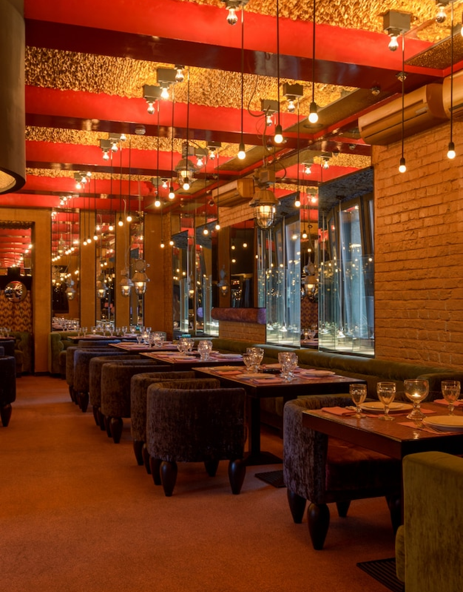
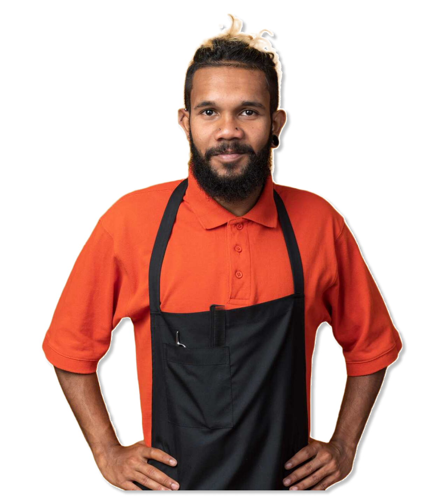

Waren merupakan tempat makan yang menghadirkan pengalaman kuliner yang unik dengan tema warna orange yang mencolok. Begitu memasuki restoran ini, Anda akan disambut dengan suasana yang hangat dan ceria yang dipenuhi dengan nuansa oranye yang mencolok dari dinding hingga dekorasi interior. Dengan desain yang modern dan stylish, Waren menciptakan atmosfer yang menyenangkan bagi para pengunjung.


Pemilik Waren
Pemilik Waren Restaurant, bernama Thompson, adalah seorang
pengusaha yang berbakat dan bersemangat dalam dunia kuliner.
Dengan visi dan dedikasinya, Tom berhasil menciptakan sebuah
restoran yang unik dan menarik dengan tema warna orange yang
mencolok. Ia adalah sosok yang memiliki kepekaan terhadap tren dan
selalu mencari cara untuk memperkaya pengalaman pelanggan.